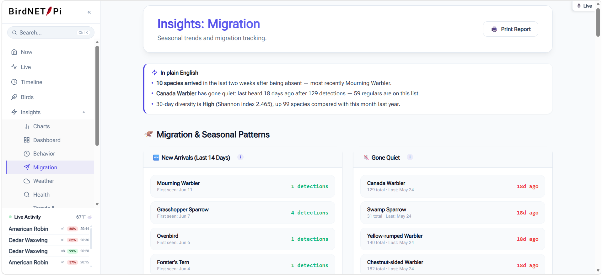
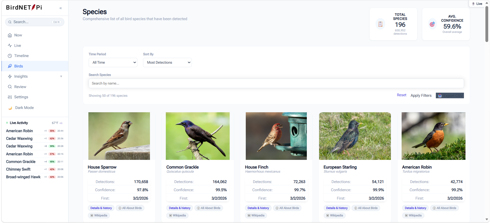
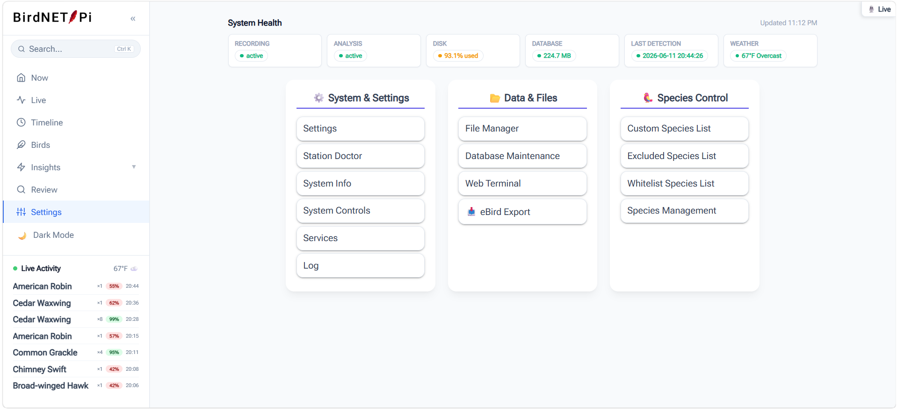

Gallery
BirdNET-Pi Enhanced screenshots
Every screen below is the real interface running on a real station. All of it works on a phone as well as a desktop, and everything has a proper dark theme.
Today dashboard

Today's species heatmap

Timeline day replay

Analytics dashboard


Insights



Review queue

Species gallery

Year in Birds

System health
